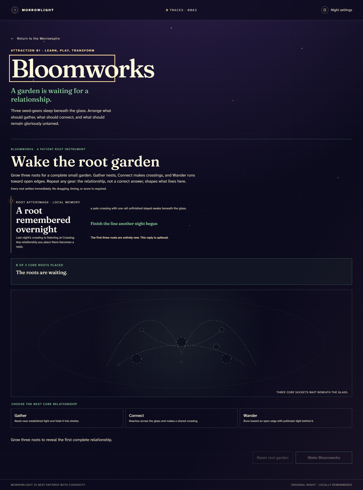
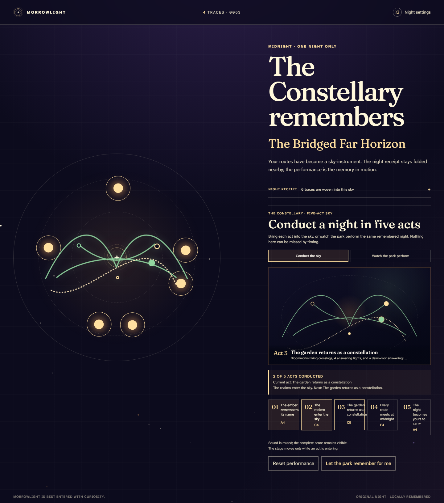
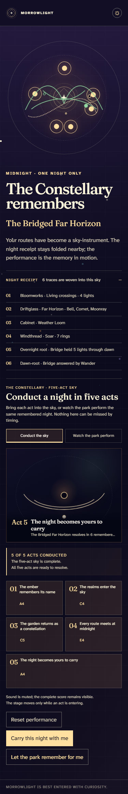

ウェブを入口ではなく場所にした
ページを眺めるのではなく、到着し、移動し、遊び、静かに休み、真夜中を迎える。サイト全体が一本の来園体験です。
MORROWLIGHT · PRESENTATION · 2026-08-01
完成した体験、設計思想、実画面、検証証拠を一つの物語として読むプレゼンテーション。
30-SECOND OVERVIEW
ブラウザそのものが、開園からフィナーレまで続く一夜のパークです。ゲストの行動を世界が覚え、別の場所へ響かせ、最後にその人だけの空として返します。
MORROWLIGHTは、テーマパークを説明するサイトではなく、ウェブそのものをテーマパークにした作品です。入口で小さな星を灯し、四つの世界で遊ぶと、選んだ順番や関係、見つけたものが地図、別のアトラクション、音、そして五幕の空のフィナーレへ戻ってきます。勝敗やスコアはありません。短く巡っても、深く遊んでも、見ているだけでも一夜は完成します。ログインも課金もなく、キーボード、タッチ、低電力、動きを減らす設定でも同じ意味の体験へ到達できます。最高である理由は物量ではなく、世界が「あなたがどう遊んだか」を覚え、他の誰でもない今夜として返す、その約束をブラウザだけで実現したことです。
FIVE REASONS
すべての判断が、ひとつの感情——「パークが私の遊び方に気づいていた」——へ収束します。
ページを眺めるのではなく、到着し、移動し、遊び、静かに休み、真夜中を迎える。サイト全体が一本の来園体験です。
根の置き方は、その場の図形だけで終わらない。生きた地図、別の庭、音、フィナーレの星座にまで届きます。
正解・点数・タイマーはない一方、最初の反応、意図的な関係づくり、任意の習熟という三層の遊びがあります。
ミュート、低電力、動きを減らす、キーボード操作を代替品にしない。同じ夜を別の感覚様式で体験できます。
持ち帰るのは個人情報ではなくローカルなNight Chart。次の夜には、前夜の根が最初のアトラクションで待っています。
| 観点 | よくあるWebコンテンツ | MORROWLIGHT |
|---|---|---|
| 入口 | 説明を読んでから始める | 最初の光に触れ、10秒以内に世界が応える |
| 個別化 | 質問票やプロフィールで分類する | 遊びの履歴そのものから世界を生成する |
| 進行 | 成功／失敗、報酬、完了率 | 好奇心、寄り道、休息も等しく参加になる |
| 記憶 | アカウントへ保存する | 端末内だけで夜を覚え、次の夜へ圧縮して渡す |
| フィナーレ | 全員に同じエンディング | 四つの世界の痕跡が五幕の個別公演になる |
| アクセス | 端末性能や操作方法で体験が欠ける | 音なし・低電力・動きなしでも意味と結果が一致する |
「MORROWLIGHTは、パーソナライズを“あなたは何タイプですか”と聞かず、“あなたが何をしたか”で実現しています。」
ONE NIGHT
感情の起伏が、ページ遷移ではなく「到着→所有→認識→解放→余韻」の来園リズムとして設計されています。
任意の三つのアトラクションの核心を遊び、Constellaryへ。忙しい人を「未完」にしません。
全世界、異なる戦略、再訪、Hushgarden、月の根、前夜への返事が追加の意味をつくります。水増しの収集作業はありません。
地図、ランドマーク、選べる順路、習熟、静かな場所、再会、真夜中の公演、土産という「テーマパークの時間」を、ブラウザのスクロールではなく状態の変化として実装しています。
THE PARK
見た目だけを着替えたミニゲームではありません。それぞれの世界が、異なる動詞、感情、残す痕跡を担当します。
| 場所 | 中心となる遊び | 感じてほしいこと | パークに残る痕跡 | 深い遊び |
|---|---|---|---|---|
| Bloomworks | 根を配置し、関係を育てる | 正解ではなく関係が生態系をつくる | 生きた根、花粉灯、Afterlightの地形 | 三本の安全な出口／六本の月根による習熟 |
| Driftglass Sea | 光を導き、どの信号に注意を向けるか選ぶ | 見逃しても失敗ではなく、別の航路になる | ガラスの航跡、同行する光、和音の間隔 | 異なる潮流、静かな入り江、固有の星座 |
| Cabinet of Near Things | 未発明の道具を観察し、一つ迎える | 役に立つ未来は、好奇心から始まる | 小さな相棒、紋章、言葉の断片 | 展示同士と前夜が交わす参照 |
| Windthread | 風に抗わず、傾きと解放で飛ぶ | 穏やかな道も大胆な道も等しく美しい | 空の糸、旗、雲の速度、フィナーレの動き | 高得点ではなく、風景と視点の秘密 |
| Hushgarden | 風を弱め、音を見返し、何もしない | 休むことも参加である | 落ち着いた呼吸、前の世界から届く光 | 完了メーターのない余白 |



この三枚はコンセプトアートではなく、本番候補を1440pxと375pxで実際に操作して撮った画面です。レイアウト、星図、前夜の根までコードから生成されています。
THE PARK REMEMBERS
“選びました”と表示するだけでは、テーマパークはゲストを覚えたことになりません。MORROWLIGHTでは、同じ意味が距離と時間を越えて再登場します。
遊び方は星図・動き・言葉・音程を変えます。一方、ミュート、低電力、動きを減らす設定は、結末の意味や結果を変えません。
二周目はまっさらな遊びとして始まります。ただし前夜の根だけが“afterimage”として待ち、返事をすると新しいdawn-rootが育ちます。
裏側では決定的な状態モデルと純粋な投影関数が地図・庭・星空を同じ履歴から生成します。技術的な決定性は、テストのためだけでなく「同じ夜をもう一度見れば、同じ思い出に会える」という感情的な信頼に使われています。
BUILT, NOT PITCHED
面白さそのものを自動テストだけで証明はできません。しかし、約束を支える到達可能性、分岐、アクセシビリティ、表示品質、本番稼働は検証できます。
| 約束 | 確認方法 | 観測結果 | 状態 |
|---|---|---|---|
| 別の遊び方が別の夜をつくる | 固定seedの異なる履歴を比較 | 根の形、地図、Hushgarden、認識幕、クライマックスが分岐 | PASS |
| 短い経路も深い経路も成立 | 安全な三本根／任意の六本根、初回／翌夜をE2E | すべて到達可能。再訪では前夜の形と新しい返事を確認 | PASS |
| 入力方法で結果を差別しない | ポインター、タッチ、Tab＋Enter/Space | 同じreducer semanticsと同じ五幕の結果 | PASS |
| 静かな経路も完全 | ミュート、reduced motion、low power | ゼロ実行アニメーションの静止絵経路でも同じ意味で完了 | PASS |
| デスクトップとモバイルで本番稼働 | Cloudflare本番URLへ24経路 | 伝播安定後24/24、100%がP6版、独立監査GO | LIVE |
| 素材が独自である | 出所台帳とビルド成果を照合 | 二つのOFLフォント以外はプロジェクト制作のCSS/SVG/Web Audio | VERIFIED |
Cloudflare Workers Static Assets、P6 Version
8020402d-5e63-48a2-9d18-e981c4e0f46a、トラフィック100%、追加bindingなし。旧版はrollback対象として保持。
アカウント、分析基盤、アップロード、広告なし。Night Chartと前夜の記憶は端末内に留まり、個人情報を要求しません。
115という数を品質の代わりにしないことが重要です。数字が証明するのは「どの入り方でも夜が壊れず、遊びの違いが本当に後ろへ届く」こと。美しさや感動は、次のスライドから実際に体験して判断してもらいます。
THE INVITATION
最高のテーマパークとは、最も多くのものを見せる場所ではなく、世界との関係を持ち帰れる場所です。
「パークを見た」ではなく、
「パークが私を見ていた」と感じて帰る。
OBSERVED Chromiumのデスクトップ／モバイル経路、キーボード、reduced-motion、low-power、自動WCAG A/AA、本番配信、素材出所。
OPTIONAL QA 人間による音響評価、実時間30〜60分滞在、Safari／Firefox、スクリーンリーダー、物理端末は未認証です。